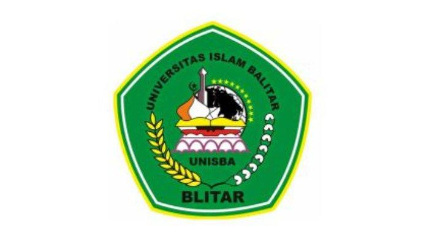

UNISBA adalah singkatan dari Universitas Islam Balitar Blitar
adalah perguruan tinggi swasta yang berkedudukan di kota Blitar, Jawa Timur yang didirikan oleh
Yayasan Bina Citra Anak Bangsa pada tanggal 5 September 2003 . UNISBA juga merupakan Kmapus
terbaik kedua se-kota Blitar dan Kabupaten Blitar bersumber dari beberapa laman berita
Arti logo kampus UNISBA Blitar

Ini logo kampus UNISBA Blitar
a. Segi lima dengan warna hitam melambangkan 5 (lima) sila Pancasila.
b. Padi dan kapas kuning dan putih menunjukkan kebangsaan, pengayoman dan keadilan.
c. Bintang melambangkan ilmu pengetahuan.
d. Masjid menggambarkan sarana mendekatkan diri pada Tuhan.
e. Toga warna hitam melambangkan produk dari Universitas berupa sarjana yang intelektual